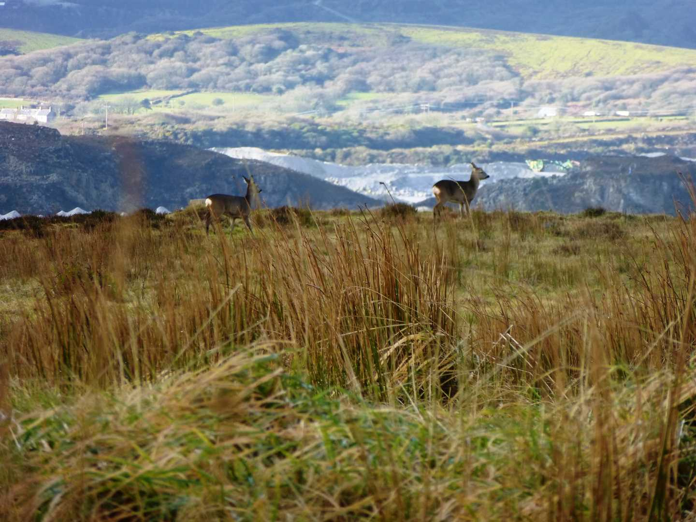
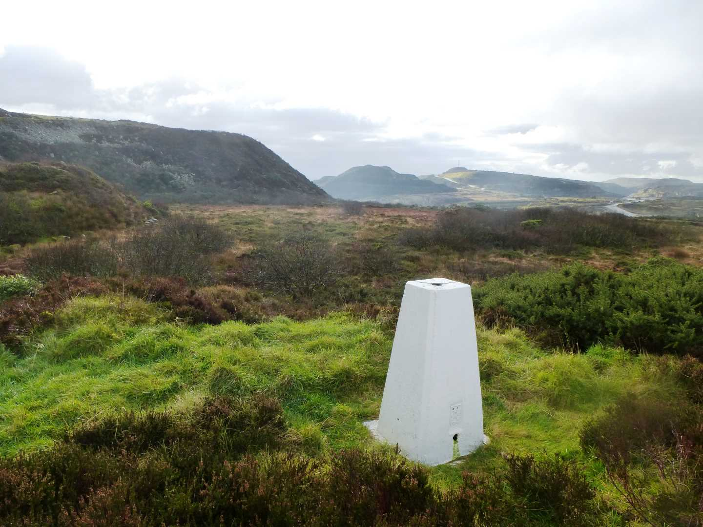

Start Ref: 9920 5753
End Ref: 9920 5753
Distance: 1.25 miles
Time: 1hrs
We start this walk in the little car pull in by Littlejohn`s China Clay Works, and rather than walk straight out on to the moor (through the swing gate on its Northern corner), we head North and down the road towards Roche for about 100m until coming to a public footpath on our right. From this point we are now out on the moor itself and follow the path still North but beginning to bear of to our right (East).
As the path leads us just below the wooden pylons, we have an option of turning right or carrying straight on. If we carry straight on we get the opportunity to turn into a field on our right and then double back on ourselves to rejoin the moor.
However, for this walk we are going to turn right as we reach pylon V18, and head slightly uphill in a Southerly direction and therefore remaining on the moor. The path then slowly converges with a fence on our left hand side, and then follows this to the corner of the moor (we pass by the gate we would have rejoined the path with if we had headed straight on earlier).
At this corner, there is a swinging foot gate, which we need to go through and then directly in front of us is the summit of Hensbarrow Beacon on the top of a small mound. Here you will find a granite pillar and a Trig Point. Take time to look around here, and realise that prior to the mining industry, we would have been on the highest point around, and that you are in fact looking down on Roche and Roche Rock, and that when it is clear we can easily see both coastlines (even though we are flanked by spoils to the East and West).
Descending from the Beacon, we do not return onto the moor, but rather keeping the fence on our right and heading West we will follow a narrow path until we emerge between two granite stones and find ourselves back at our car.
This is a very short walk, and deceptive in as much that it is not the highest feature around. However, the moorland itself is wild and relatively untouched, which means that if you decide to lengthen your walk and go deeper North in to the moor, you will find that the bracken, heather and furze make for interesting walking and you will find yourself being Piskie Led quite easily. This feature also makes for an abundance of wildlife and I have seen Roe Deer on every occasion that I have walked this, and local stories point to numerous sightings of the (not so) illusive Beast.
I hope that you enjoy.